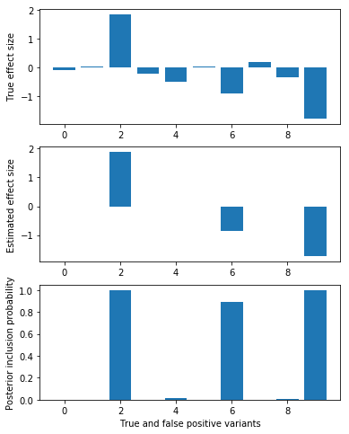

Fine mapping idea
Table of Contents
1 Proposed model
Revise the notation, using Latin for the model and Greek for the variational approximation.
\[ p(\mathbf{y} \mid \mathbf{x}, \mathbf{w}) = N(\mathbf{y}; \mathbf{x} \mathbf{w}', v^{-1} \mathbf{I}) \] \[ \mathbf{w} = \sum_k z_{kj} b_{kj} \] \[ p(z_k, \mathbf{p}) = \mathrm{Multinomial}(1, \mathbf{p}) \] \[ p(b_{kj} \mid z_k = 1, v, v_b) = N(0, v^{-1} v_b^{-1}) \] \[ q(z_k \mid \pi) = \mathrm{Multinomial}(1, \mathbf{\pi}) \] \[ q(b_{kj} \mid \mu, \phi) = N(\mu_{kj}, \phi_{kj}^{-1}) \]
2 Variational lower bound
\[ \mathrm{ELBO} = \mathbb{E}_q[p(\mathbf{y} \mid \mathbf{x}, \mathbf{w})] - KL(q(\mathbf{z}) \Vert p(\mathbf{z})) - KL(q(\mathbf{b}) \Vert p(\mathbf{b})) \] \[ \mathbb{E}_q[p(\mathbf{y} \mid \mathbf{x}, \mathbf{w})] = -\frac{v}{2} \sum_i \left(y_i - \sum_j x_{ij} \mathbb{E}_q[w_j]\right)^2 - \sum_{i,j} x_{ij}^2 \mathbb{V}_q[w_j] \]
\[ \mathbb{E}_q[w_j] = \sum_k \pi_{kj} \mu_{kj} \] \[ \mathbb{V}_q[w_j] = \sum_k \pi_{kj} \phi_{kj}^{-1} + \pi_{kj} (1 - \pi_{kj}) \mu_{kj}^2 \]
\[ KL(q(\mathbf{z}) \Vert p(\mathbf{z})) = \sum_k E_q[\ln q(z_k) - \ln p(z_k)] \] \[ = \sum_k \left[\sum_j \pi_{kj} \ln \pi_{kj} - \sum_j \pi_{kj} \ln p_{k}\right] \] \[ = \sum_{j,k} \pi_{kj} \left( \ln \pi_{kj} - \ln p_{k} \right) \]
\[ KL(q(\mathbf{b}) \Vert p(\mathbf{b})) = \frac{1}{2} \sum_{j,k} 1 + \ln (v v_b) - \ln \phi_{kj} + v v_b (\mu_{kj}^2 + \phi_{kj}^{-1})\]
3 Setup
sbatch --partition=broadwl --mem=16G --time=36:00:00 --job-name=ipython3 --output=ipython3.out #!/bin/bash source activate nwas rm -f $HOME/.local/share/jupyter/runtime/kernel-aksarkar.json ipython3 kernel --ip=$(hostname -i) -f kernel-aksarkar.json
Submitted batch job 39720215
%matplotlib inline import edward as ed import matplotlib.pyplot as plt import nwas import numpy as np import pyplink import tensorflow as tf
4 Simulated data and existing method
with nwas.simulation.simulation(p=1000, pve=0.5, annotation_params=[(10, 1)], seed=0) as s: x, y = s.sample_gaussian(n=500) x = x.astype('float32') y = y.reshape(-1, 1).astype('float32')
opt = nwas.sgvb.gaussian_spike_slab(x, y, stoch_samples=10) plt.clf() q = np.logical_or(s.theta != 0, opt[0].ravel() > 0.1) fig, ax = plt.subplots(3, 1, sharex=True) fig.set_size_inches(6, 8) ax[0].bar(np.arange(np.sum(q)), s.theta[q]) ax[0].set_ylabel('True effect size') ax[1].bar(np.arange(np.sum(q)), opt[1].ravel()[q]) ax[1].set_ylabel('Estimated effect size') ax[2].bar(np.arange(np.sum(q)), opt[0].ravel()[q]) ax[2].set_ylabel('Posterior inclusion probability') ax[2].set_xlabel('True and false positive variants')
<matplotlib.text.Text at 0x2b137360ec18>

5 Coordinate ascent
Between the old approximation and this approximation, the only difference is \(KL\left(q(z)\Vert p(z)\right)\), but it has similar form. This suggests that the same update would work.
The real problem is that the optimization is now constrained to have \(\pi\) on the probability simplex, which isn't captured in the objective function.
Normalizing \(\pi_k\) after each update does not increase the ELBO.
def elbo(x, y, pip, mean, var, effect_var, residual_var): n, p = x.shape genetic_value_mean = np.dot(x, (pip * mean).sum(axis=0, keepdims=True).T) genetic_value_var = np.dot(np.square(x), (pip * var.T + pip * (1 - pip) * np.square(mean)).sum(axis=0, keepdims=True).T) llik = -.5 / residual_var * (np.square(y - genetic_value_mean).sum() - genetic_value_var).sum() # Assume prior probability 1/p for each variant kl_z = (pip * (np.log(pip) + np.log(p))).sum() kl_b = .5 * (1 + np.log(effect_var * residual_var) - np.log(var.T) + (np.square(mean) + var.T) / (effect_var * residual_var)).sum() return llik, kl_z, kl_b def coordinate_ascent(x, y, effect_var, residual_var, l=5, num_epochs=200, verbose=False): n, p = x.shape pi = np.ones((p, 1)) d = np.einsum('ij,ij->j', x, x).reshape(-1, 1) xy = x.T.dot(y) pip = np.zeros((l, p)) mean = np.zeros((l, p)) # Make sure everything is two dimensional to catch numpy broadcasting gotchas var = (effect_var * residual_var / (effect_var * d + 1)).reshape(-1, 1) eta = np.dot(x, (pip * mean).sum(axis=0, keepdims=True).T) elbo_ = None for epoch in range(num_epochs): for k in range(l): eta -= np.dot(x, (pip * mean)[k:k + 1].T) mean[k:k + 1] = (var / residual_var * (xy - x.T.dot(eta))).T pip[k:k + 1] = (pi * np.exp(.5 * (np.log(var / (effect_var * residual_var)) + np.square(mean[k:k + 1].T) / var))).T pip[k] /= pip[k].sum() eta += np.dot(x, (pip * mean)[k:k + 1].T) llik, kl_z, kl_b = elbo(x, y, pip, mean, var, effect_var, residual_var) update = llik - kl_z - kl_b print(epoch, update, llik, kl_z, kl_b) if elbo_ is not None and (np.isnan(update) or update <= elbo_): print('Halting') break else: elbo_ = update return {'pip': pip, 'mean': mean, 'var': var, 'elbo': elbo_} opt = coordinate_ascent(x, y, 1, s.residual_var)
| Epoch | ELBO | llik | KL(z) | KL(b) |
|---|---|---|---|---|
| 0 | -132745.452102 | -117713.981064 | 25.352915083 | 15006.1181232 |
| 1 | -132897.186438 | -117869.855683 | 25.1308287107 | 15002.1999267 |
Halting
6 SGVB on same objective
We can optimize the ELBO using gradient descent, but we have to project \(\pi\) onto the simplex after each iteration.
This solution doesn't appear to select any variables.
TODO: what's going on with KL(b)?
opt = nwas.sgvb.gaussian_categorical_slab(x, y, l=5)
| Epoch | ELBO | llik | R | KL(v) | KL(vb) | KL(z) | KL(b) |
|---|---|---|---|---|---|---|---|
| 0 | -31616.9 | -8184.2 | -83.5247 | 1.03809 | 1.03809 | 15764.1 | 7666.5 |
| 100 | -5466.45 | -21.7072 | -0.00486338 | 1.06517 | 1.1396 | 18.8546 | 5423.68 |
| 200 | -5081.73 | -18.489 | 0.00123519 | 1.71877 | 1.03829 | 18.8523 | 5041.63 |
| 300 | -5042.73 | -18.4033 | 0.00186509 | 2.71956 | 1.01052 | 18.8522 | 5001.75 |
| 400 | -5039.48 | -16.6873 | 0.000676155 | 2.83859 | 1.00315 | 18.8522 | 5000.1 |
| 500 | -5038.41 | -15.624 | 0.00157309 | 2.81707 | 1.00042 | 18.8522 | 5000.11 |
| 600 | -5040.08 | -17.2356 | 0.000780165 | 2.86988 | 1.00021 | 18.8522 | 5000.12 |
| 700 | -5040.78 | -17.9397 | 0.00160074 | 2.89161 | 1.00254 | 18.8522 | 5000.1 |
| 800 | -5038.4 | -15.5763 | 0.00114691 | 2.87492 | 1.00723 | 18.8522 | 5000.09 |
| 900 | -5038.51 | -15.5154 | 0.00095582 | 2.99483 | 1.01352 | 18.8522 | 5000.13 |
opt[0].max(axis=1), opt[0].argmax(axis=1)
(array([ 0.09879258, 0.08785395, 0.09147501, 0.06612478, 0.0979613 ], dtype=float32), array([166, 880, 740, 881, 436]))
7 Continuous relaxation
In order to make the model amenable to automatic inference, we could use the ExpConcrete distribution (Maddison et al 2017, Jang et al 2017) in place of the Categorical distribution.
We avoid the problem of constrained optimization, but then have to deal with extra hyperparameters (temperatures).
The solution to this relaxed objective doesn't appear to select any variables, possibly because the KL penalty for \(\mathbf{z}\) is too strong.
def edward_model(x, y, l, learning_rate=1e-5, temperature=0.1): y_ = y / y.std() with tf.Graph().as_default(), tf.Session(), tf.variable_scope('model', initializer=tf.random_normal_initializer): n, p = x.shape x_ph = tf.placeholder(tf.float32) p_z = ed.models.ExpRelaxedOneHotCategorical( temperature=temperature, logits=tf.fill([l, p], 1.)) p_b = ed.models.Normal( loc=tf.zeros([l, p]), scale=nwas.sgvb.biased_softplus(tf.get_variable('s_b', [1]))) w = tf.transpose(tf.reduce_sum(p_z * p_b, axis=0, keep_dims=True)) p_y = ed.models.Normal( loc=tf.matmul(x, w), scale=tf.constant(1.)) q_z = ed.models.ExpRelaxedOneHotCategorical( temperature=temperature, logits=nwas.sgvb.biased_softplus(tf.get_variable('pi', [l, p]))) q_b = ed.models.Normal( loc=tf.get_variable('mu', [l, p]), scale=nwas.sgvb.biased_softplus(tf.get_variable('sigma_b', [l, p]))) vb = ed.KLqp(latent_vars={p_z: q_z, p_b: q_b}, data={x_ph: x, p_y: y_}) vb.initialize(optimizer=tf.train.RMSPropOptimizer(learning_rate=learning_rate)) vb.run() return ed.get_session().run([tf.nn.top_k(q_z.probs, k=10)]) opt = edward_model(x, y, l=1) opt
[TopKV2(values=array([[ 0.00781378, 0.00737324, 0.00698482, 0.00644312, 0.00631097,
0.0053747 , 0.00509084, 0.00501854, 0.00490211, 0.00486596]], dtype=float32), indices=array([[299, 333, 265, 747, 672, 137, 778, 491, 610, 342]], dtype=int32))]
8 Dirichlet-Multinomial model
TODO: investigate a potential simplification of the idea:
\[ b_j \mid z_j, v, v_b \sim N(0, v^{-1} v_b^{-1}) \] \[ \mathbf{z} \sim DirichletMultinomial(l, \mathbf{a}) \]
def dm_model(x, y, max_num_causal, num_iters=5000): n, p = x.shape with tf.Graph().as_default(), tf.Session(), tf.variable_scope('model', initializer=tf.random_normal_initializer): max_num_causal = tf.cast(max_num_causal, tf.float32) x_ph = tf.placeholder(tf.float32) z = ed.models.DirichletMultinomial(max_num_causal, tf.ones([1, p])) b = ed.models.Normal(loc=tf.zeros([1, p]), scale=tf.constant(1.)) p_y = ed.models.Normal(loc=tf.matmul(x_ph, z * b, transpose_b=True), scale=tf.cast(y.std() / 2, tf.float32)) q_z = ed.models.Empirical(tf.get_variable('q_z', [num_iters, 1, p])) q_b = ed.models.Empirical(tf.get_variable('q_b', [num_iters, 1, p])) inference = ed.HMC(latent_vars={z: q_z, b: q_b}, data={x_ph: x, p_y: y}) inference.run(step_size=0.01) return ed.get_session().run(tf.reshape(q_z.params, [num_iters, p])) trace = dm_model(x, y, 1) trace.mean(axis=1)[:10]